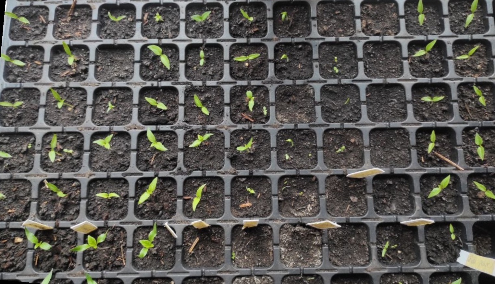
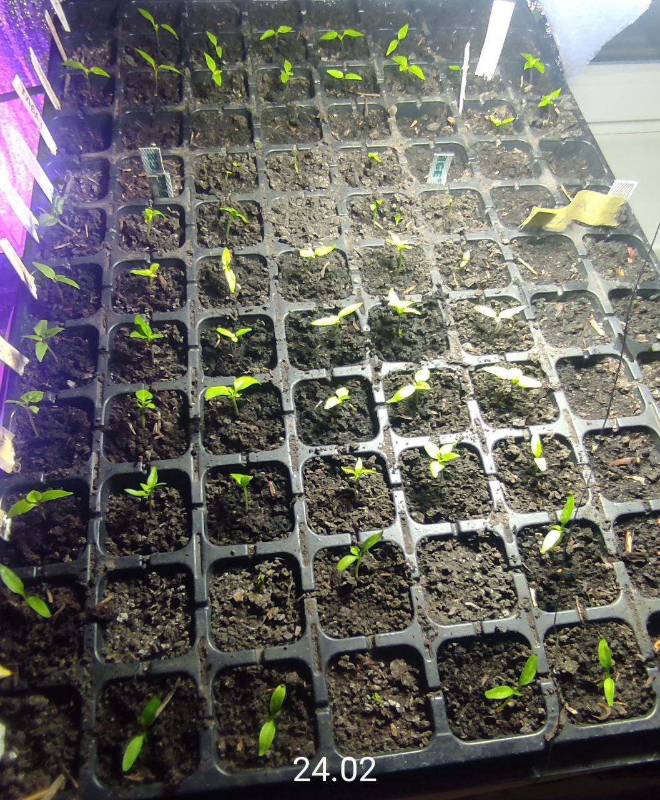
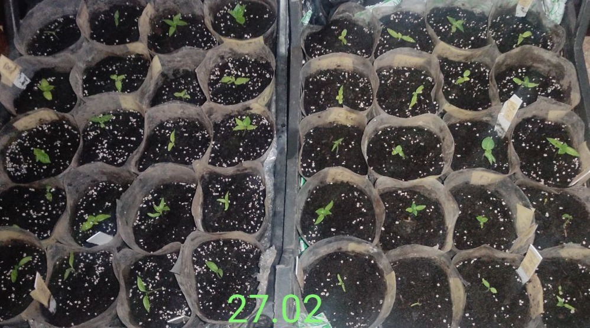
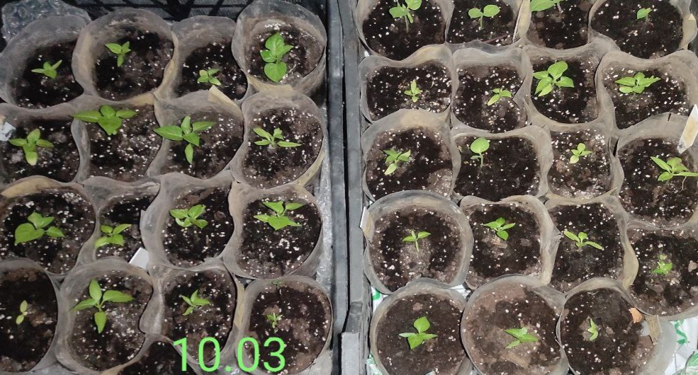
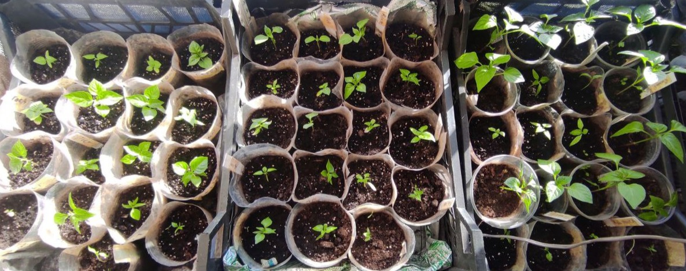

Березень 14, 2026 | Нотатки з грядки
Еволюція Inferno: Як народжується врожай суперхотів

Часто нас питають: "А чи точно воно виросте?". Замість тисячі слів ми просто показуємо наш сімейний архів пророщування суперхотів цього сезону.

24 лютого: Перші сміливці. Ті самі легендарні "петельки". У цей момент головне — світло і тепло.

27 лютого: Перша пікіровка. Малюки отримали свої окремі "квартири" — перші горщики.

10 березня: Формування другої пари справжніх листків. Коренева система зміцнюється.

14 березня: Вибуховий ріст! Це вже підлітки з характером. Вони готові підкорювати цей великий світ.
Наш секрет успіху: Ми не просто садимо насіння. Ми стежимо за кожним етапом і відбираємо лише найсильніших "атлетів".
2026 | FAQ & Досвід 🔍
Суперхоти: Шлях терпіння та драми. Як виростити суперхоти вдома?
Ви вирішили виростити щось гостріше за звичайний "Вогник"? Ласкаво просимо до клубу. Але перед тим, як покласти насіння у ґрунт, забудьте все, що знали про перці. Суперхоти грають за власними правилами, вони як інша галактика!
1. Екзамен на витримку
Насіння суперхотів не проростає — воно медитує. Якщо звичайний перець вилітає за кілька днів, ці хлопці можуть сидіти в землі тижнями. Іноді не допомагають ні серветки, ні тепличка. Просто чекайте.
2. Фаза "Drama Queen"
На етапі перших справжніх листків починається справжній трилер. Ваша розсада стає неймовірно тендітною. Суперхоти зараз — справжні королеви драми 👑💅.
Важливо: Перелив на цьому етапі дорівнює смерті 💀. Зайва вода чи перелив — і рослина гине за ніч.
Також на цьому етапі критично поставити 💨обдув💨. Легкий вітерець від вентилятора імітує природу та зміцнює стовбур, а що найбільш критично, не дає причепитися усіляким грибкам або патогенам на рослині, а також підсушує, якщо Ви допустили маленький перелив. Вентилятор також може компенсувати недостатність освітлення, без нього ви отримаєте слабкі "ниточки".
3. Пікіровка 🪴: Зона ризику
Суперхоти ненавидять, коли чіпають їхнє коріння. Кожна пересадка — це стрес, який може зупинити ріст на тиждень . Ми радимо садити одразу у стакани. Якщо ж пікіруєте — будьте готові до втрат або використовуйте антистрес-препарати.
4. Світло в кінці тунелю
Коли з’являється другий сет справжніх листків, примхи трохи вщухають (але не розслабляйтеся ще!🔥). Рослина стає міцною день у день. Ви помічатимете, як кожного дня суперхоти нарощують зелену масу і укріплюються.